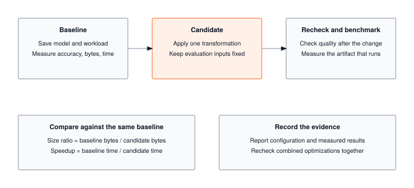

Module 20: Capstone
The framework you wrote now has to run end-to-end, on one model, with every optimization stacked and every number defended. The capstone is where profiling, quantization, compression, acceleration, memoization, and benchmarking land on a single inference pipeline and produce an MLPerf-style results.json with platform metadata, warmup-controlled latencies, and schema-validated confidence intervals. Optimizations interact at runtime; this is where you measure whether they actually compound on silicon.
OPTIMIZATION TIER | Difficulty: ●●●● | Time: 6-8 hours | Prerequisites: All modules (01-19)
This capstone assumes you’ve built a complete framework end-to-end:
- Core framework (Modules 01-13) — required
- Optimization techniques (Modules 14-18) — recommended
- Benchmarking methodology (Module 19) — required
Parts 1-4 run on Modules 01-13 + 19 alone. Part 4b layers in Modules 14-18 to drive the full baseline-to-optimized workflow; without them, the pipeline degrades to baseline benchmarking only.
🎧 Audio Overview
Listen to an AI-generated overview.
Overview
Nineteen modules in, you have a working ML framework. Tensors, autograd, transformers, quantization, pruning, profiling — every line written by you. The Olympics is where you put it on the scale.
In production ML, an unmeasured claim is no claim at all. This capstone gives your framework the same treatment MLPerf and Papers with Code give a real submission: a baseline measurement, an optimization pass, an apples-to-apples comparison, and a schema-validated artifact someone else can verify. You’ll write the benchmarking harness, run it against your own code, and ship a results.json that stands on its own.
When you finish, you won’t just have a framework. You’ll have evidence.
Learning Objectives
- Implement comprehensive benchmarking infrastructure measuring accuracy, latency, throughput, and memory
- Master the three pillars of reliable benchmarking: repeatability, comparability, and completeness
- Understand performance measurement traps (variance, cold starts, batch effects) and how to avoid them
- Connect your TinyTorch implementation to production ML workflows (experiment tracking, A/B testing, regression detection)
- Generate schema-validated JSON submissions that enable reproducible comparisons and community sharing
What You’ll Build

BenchmarkReport and generate_submission() to produce a schema-validated results.json.
Implementation roadmap:
Table 1 lays out the implementation in order, one part at a time.
| Part | What You’ll Implement | Key Concept |
|---|---|---|
| 1 | SimpleMLP |
Baseline model for benchmarking demonstrations |
| 2 | BenchmarkReport |
Comprehensive performance measurement with statistical rigor |
| 3 | generate_submission() |
Standardized JSON generation with schema compliance |
| 4 | validate_submission_schema() |
Automated validation ensuring data quality |
| 5 | Complete workflows | Baseline, optimization, comparison, submission pipeline |
The pattern you’ll enable:
# Professional ML workflow
report = BenchmarkReport(model_name="my_model")
report.benchmark_model(model, X_test, y_test, num_runs=100)
submission = generate_submission(
baseline_report=baseline_report,
optimized_report=optimized_report,
techniques_applied=["quantization", "pruning"]
)
save_submission(submission, "results.json")What You’re NOT Building (Yet)
Out of scope for this capstone:
- CI/CD pipelines that benchmark on every commit
- Multi-hardware comparison across CPU/GPU/TPU
- Plotting dashboards for accuracy-vs-latency curves
- Leaderboard aggregation across community submissions
You are building the measurement and reporting foundation everything else stands on. Automation and visualization layer on top — but only if the numbers underneath are trustworthy.
API Reference
This section provides a quick reference for the benchmarking classes and functions you’ll build. Use this while implementing and debugging.
BenchmarkReport Constructor
BenchmarkReport(model_name: str = "model") -> BenchmarkReportCreates a benchmark report instance that measures and stores model performance metrics along with system context for reproducibility.
BenchmarkReport Properties
The properties you expose are summarised in Table 2.
| Property | Type | Description |
|---|---|---|
model_name |
str |
Identifier for the model being benchmarked |
metrics |
dict |
Performance measurements (accuracy, latency, etc.) |
system_info |
dict |
Platform, Python version, NumPy version |
timestamp |
str |
When benchmark was run (ISO format) |
Core Methods
Table 3 lists the methods on the report class.
| Method | Signature | Description |
|---|---|---|
benchmark_model |
benchmark_model(model, X_test, y_test, num_runs=100) -> dict |
Measures accuracy, latency (mean ± std), throughput, memory |
generate_submission |
generate_submission(baseline_report, optimized_report=None, ...) -> dict |
Creates standardized JSON with baseline, optimized, improvements |
save_submission |
save_submission(submission, filepath="submission.json") -> str |
Writes JSON to file with validation |
validate_submission_schema |
validate_submission_schema(submission) -> bool |
Validates structure and value ranges |
Module Dependencies and Imports
This capstone integrates components from across TinyTorch:
Core dependencies (required):
from tinytorch.core.tensor import Tensor
from tinytorch.core.layers import Linear
from tinytorch.core.activations import ReLU
from tinytorch.core.losses import CrossEntropyLossOptimization modules (optional):
# These imports use try/except blocks for graceful degradation
try:
from tinytorch.perf.profiling import Profiler, quick_profile
from tinytorch.perf.compression import magnitude_prune, structured_prune
from tinytorch.perf.benchmarking import Benchmark, BenchmarkResult
except ImportError:
# Core benchmarking still works without optimization modules
passThe advanced optimization workflow (Part 4b) demonstrates these optional integrations, but the core benchmarking system (Parts 1-4) works with just the foundation modules (01-13) and basic benchmarking (19).
Core Concepts
This section covers the fundamental principles of professional ML benchmarking. These concepts apply to every ML system, from research papers to production deployments.
The Reproducibility Crisis in ML
ML has a credibility problem. A paper claims “92% accuracy with 10ms latency” — and you can’t reproduce it, because the paper never said which hardware, which software versions, which batch size, or how the measurement was taken. Without those facts the number is folklore.
MLPerf and Papers with Code emerged to fix this, and they did it by requiring four things from every submission:
- Standardized tasks on fixed datasets
- Hardware specifications documented in full
- Measurement protocols pinned down precisely
- Code submissions that anyone can re-run
Your benchmarking system enforces the same contract. Every submission you generate carries the context another person needs to reproduce — or refute — your claim.
The Three Pillars of Reliable Benchmarking
Professional benchmarking rests on three foundational principles: repeatability, comparability, and completeness.
Repeatability means running the same experiment multiple times produces the same result. This requires fixed random seeds, consistent test datasets, and measuring variance across runs. A single measurement of “10.3ms” is worthless because you don’t know if that’s typical or an outlier. Measuring 100 times and reporting “10.0ms ± 0.5ms” tells you the true performance and its variability.
Here’s how your implementation ensures repeatability:
# Measure latency with statistical rigor
latencies = []
for _ in range(num_runs):
start = time.time()
_ = model.forward(X_test[:1]) # Single sample inference
latencies.append((time.time() - start) * 1000) # Convert to ms
avg_latency = np.mean(latencies)
std_latency = np.std(latencies)The loop runs inference 100 times (by default) to capture variance. The first few runs may be slower due to cold caches, and occasional runs may hit garbage collection pauses. By aggregating many measurements, you get a statistically valid estimate.
Comparability means different people can fairly compare results. This requires documenting the environment completely:
def _get_system_info(self):
"""Collect system information for reproducibility."""
return {
'platform': platform.platform(),
'python_version': sys.version.split()[0],
'numpy_version': np.__version__
}When someone sees your submission claiming 10ms latency, they need to know if that was measured on a MacBook or a server with 32 CPU cores. Platform differences can cause 10x performance variations, making cross-platform comparisons meaningless without context.
Completeness means capturing all relevant metrics, not cherry-picking favorable ones. Your benchmark_model method measures six distinct metrics:
self.metrics = {
'parameter_count': int(param_count),
'model_size_mb': float(model_size_mb),
'accuracy': float(accuracy),
'latency_ms_mean': float(avg_latency),
'latency_ms_std': float(std_latency),
'throughput_samples_per_sec': float(1000 / avg_latency)
}Each metric answers a different question. Parameter count indicates model capacity. Model size determines deployment cost. Accuracy measures task performance. Latency affects user experience. Throughput determines batch processing capacity. Optimizations create trade-offs between these dimensions, so measuring all of them prevents hiding downsides.
End-to-End Inference Complexity
Before tuning any single knob, it helps to write down the whole inference cost in one place. For a transformer-style model serving a request at batch size B, sequence length S, hidden dimension D, and L layers, the end-to-end cost decomposes as:
\[T_{\text{inference}} = \underbrace{T_{\text{preproc}}}_{O(S)} \;+\; \underbrace{L \cdot (T_{\text{attn}} + T_{\text{ffn}})}_{\text{layer stack}} \;+\; \underbrace{T_{\text{postproc}}}_{O(1)}\]
- Attention per layer: \(O(B \cdot S^2 \cdot D)\) FLOPs, \(O(B \cdot S \cdot D)\) memory reads with KV caching, \(O(B \cdot S^2 \cdot D)\) without.
- Feed-forward per layer: \(O(B \cdot S \cdot D^2)\) FLOPs, \(O(D^2)\) weight bytes read per layer (amortized across B·S tokens).
- Total: \(O(L \cdot B \cdot S \cdot D \cdot (S + D))\) FLOPs dominate training and prefill; at decode time, \(O(L \cdot B \cdot D^2)\) weight reads per generated token dominate — which is why decode is memory-bound.
Each optimization from Modules 14–18 attacks a specific term:
- Quantization (15) shrinks the weight-byte constant 4× — wins on decode and embedding lookups.
- Compression (16) reduces the effective D (structured) or the nonzero count (unstructured) — wins on FFN cost.
- Acceleration (17) collapses memory complexity for element-wise ops (Θ(kN) → Θ(N)) and raises the GEMM constant toward peak.
- Memoization (18) turns the \(S^2\) attention term into \(S\) during decode — wins more as context grows.
A capstone submission must measure the composite effect. Optimizations interact — pruning that enables lower rank may hurt the quantization scale; kernel fusion that assumes dense tensors may defeat sparsity — and only an end-to-end benchmark reveals whether the stack actually compounds.
Latency vs Throughput: A Critical Distinction
Many beginners confuse latency and throughput because both relate to speed. They measure fundamentally different things.
Latency measures per-sample speed: how long does it take to process one input? This matters for real-time applications where users wait for results. Your implementation measures latency by timing single-sample inference:
# Latency: time for ONE sample
start = time.time()
_ = model.forward(X_test[:1]) # Shape: (1, features)
latency_ms = (time.time() - start) * 1000A model with 10ms latency processes one input in 10 milliseconds. The user submits a query and waits 10ms. That number lives or dies on user experience.
Throughput measures batch capacity: how many inputs can you process per second? This is the metric for offline jobs grinding through millions of examples. Your implementation derives it from latency:
throughput_samples_per_sec = 1000 / avg_latencyAt 10ms per sample, throughput is 1000 / 10 = 100 samples/second — but only if you process one sample at a time. Batching changes the math. A batch of 32 samples might take 50ms total, which is 640 samples/second of throughput at the cost of 50ms per-request latency.
The trade-off: Batching increases throughput but hurts latency. A production API serving individual user requests optimizes for latency to maintain a snappy user experience. A background batch processing pipeline optimizes for throughput to minimize total compute costs. Choosing between them is a fundamental architectural decision.
To truly master this engineering trade-off, you must look beyond timing metrics and analyze Hardware Utilization. A GPU processing a single token (batch size 1) might only utilize 5% of its available ALUs, wasting 95% of the silicon you are paying for. As you increase the batch size, you saturate the computation engines and memory buses, pushing utilization toward 100%. However, Little’s Law (\(L = \lambda W\)) mathematically dictates that the number of concurrent items in the system (\(L\)) equals the throughput (\(\lambda\)) multiplied by the latency (\(W\)). In a capstone setting—and in production—you must intentionally target a specific operating point on this curve. You cannot cheat the physical limits of the underlying hardware.
Statistical Rigor: Why Variance Matters
Single measurements lie. Variance tells the truth about performance consistency.
Consider two models, both with mean latency of 10.0ms. Model A has standard deviation of 0.5ms. Model B has standard deviation of 4.2ms. Which would you deploy?
Model A’s predictable performance (9.5-10.5ms range) provides consistent user experience. Model B’s erratic performance (sometimes 6ms, sometimes 15ms) creates frustration. Users prefer reliable slowness over unpredictable speed.
Your implementation captures this variance:
latencies = []
for _ in range(num_runs):
start = time.time()
_ = model.forward(X_test[:1])
latencies.append((time.time() - start) * 1000)
avg_latency = np.mean(latencies)
std_latency = np.std(latencies) # Captures varianceRunning 100 iterations isn’t just for accuracy of the mean. It also characterizes the distribution. High standard deviation indicates performance varies significantly run-to-run, perhaps due to garbage collection pauses, cache effects, or OS scheduling.
In production systems, engineers track percentiles (p50, p90, p99) to understand tail latency. The p99 latency tells you “99% of requests complete within this time,” which matters more for user experience than mean latency. One user experiencing a 100ms delay (because they hit p99) has a worse experience than if all users consistently saw 20ms.
The Optimization Trade-off Triangle
Every optimization involves trade-offs between three competing objectives: speed (latency), size (memory), and accuracy. You can optimize for any two, but achieving all three simultaneously is impossible with current techniques.
Fast + Small means aggressive optimization. Quantizing to INT8 reduces model size 4x and speeds up inference 2x, but typically costs 1-2% accuracy. Pruning 50% of weights halves memory and adds another speedup, but may lose another 1-2% accuracy. You’ve traded accuracy for efficiency.
Fast + Accurate means careful optimization. You might quantize only certain layers, or use INT16 instead of INT8. You preserve accuracy but achieve less compression. The model is faster but not dramatically smaller.
Small + Accurate means conservative techniques. Knowledge distillation transfers accuracy from a large teacher to a small student. The student is smaller and maintains accuracy, but may be slower than aggressive quantization because it still operates in FP32.
Your submission captures these trade-offs automatically:
submission['improvements'] = {
'speedup': float(baseline_latency / optimized_latency),
'compression_ratio': float(baseline_size / optimized_size),
'accuracy_delta': float(
optimized_report.metrics['accuracy'] - baseline_report.metrics['accuracy']
)
}A speedup of 2.3x with compression of 4.1x but accuracy delta of -0.01 (-1%) shows you chose the “fast + small” corner of the triangle. A speedup of 1.2x with compression of 1.5x but accuracy delta of 0.00 shows you chose “accurate + moderately fast.”
Schema Validation: Enabling Automation
Your submission format uses a structured JSON schema that enforces completeness and type safety. This isn’t bureaucracy—it enables powerful automation.
Without schema validation, submissions become inconsistent. One person reports accuracy as a percentage string (“92%”), another as a float (0.92), another as an integer (92). Aggregating these results requires manual cleaning. With schema validation, every submission uses the same format:
# Schema-enforced format
'accuracy': float(accuracy) # Always 0.0-1.0 float
# Validation catches errors
assert 0 <= metrics['accuracy'] <= 1, "Accuracy must be in [0, 1]"This enables automated processing:
The code in ?@lst-20-capstone-schema-automation makes this concrete.
# Aggregate community results automatically
all_submissions = [load_json(f) for f in submission_files]
avg_accuracy = np.mean([s['baseline']['metrics']['accuracy']
for s in all_submissions])
# Build leaderboards
sorted_by_speedup = sorted(all_submissions,
key=lambda s: s['improvements']['speedup'],
reverse=True)
# Detect regressions in CI/CD
if new_latency > baseline_latency * 1.1:
raise Exception("Performance regression: 10% slower!"): Listing 20.1 — Schema-validated submissions unlock automated aggregation, leaderboards, and regression detection. {#lst-20-capstone-schema-automation}
The schema also enables forward compatibility. When you add new optional fields, old submissions remain valid. When you require new fields, the version number increments, and validation enforces the migration.
Performance Measurement Traps
Real-world benchmarking is full of subtle traps that invalidate measurements. Understanding these pitfalls is crucial for accurate results.
Trap 1: Measuring the Wrong Thing. If you time model creation instead of just inference, you’re measuring initialization overhead, not runtime performance. If you include data loading in the timing loop, you’re measuring I/O speed, not model speed. The fix is isolating exactly what you want to measure:
The code in ?@lst-20-capstone-trap-isolation makes this concrete.
# Prepare data BEFORE timing
X = create_test_input()
# Time ONLY the operation you care about
start = time.time()
output = model.forward(X) # Only this is timed
latency = time.time() - start
# Process output AFTER timing
predictions = postprocess(output): Listing 20.2 — Isolating the timed region from setup and post-processing. {#lst-20-capstone-trap-isolation}
Trap 2: Ignoring System Noise. Operating systems multitask. Your benchmark might get interrupted by background processes, garbage collection, or CPU thermal throttling. Single measurements capture noise. Multiple measurements average it out. Your implementation runs 100 iterations by default to handle this.
Trap 3: Cold Start Effects. The first inference is often slower because caches are cold and JIT compilers haven’t optimized yet. Production benchmarks typically discard the first N runs as “warm-up.” Your implementation includes warm-up inherently by averaging all runs—the few slow cold starts get averaged with many fast warm runs.
Trap 4: Batch Size Confusion. Measuring latency on batch_size=32 then dividing by 32 doesn’t give per-sample latency. Batching amortizes overhead, so batch latency / batch_size underestimates per-sample latency. Always measure with the same batch size as production deployment.
System Integration: The Complete ML Lifecycle
This capstone represents the final stage of the ML systems lifecycle, but it’s also the beginning of the next iteration. Production ML systems operate in a never-ending loop:
- Research & Development - Build models (Modules 01-13)
- Baseline Measurement - Benchmark unoptimized performance (Module 19)
- Optimization - Apply techniques like quantization and pruning (Modules 14-18)
- Validation - Benchmark optimized version (Module 19)
- Decision - Keep optimization if improvements outweigh costs (Module 20)
- Deployment - Serve model in production
- Monitoring - Track performance over time, detect regressions
- Iteration - When performance degrades or requirements change, loop back to step 3
Your submission captures a snapshot of this cycle. The baseline metrics document performance before optimization. The optimized metrics show results after applying techniques. The improvements section quantifies the delta. The techniques_applied list enables reproducibility.
In production, engineers maintain this documentation across hundreds of experiments. When a deployment’s latency increases from 10ms to 30ms three months later, they consult the original benchmark to understand what changed. Without system_info and reproducible measurements, debugging becomes guesswork.
Production Context
Your Implementation vs. Industry Standards
Your TinyTorch benchmarking system implements the same principles used by production ML frameworks and research competitions, just at educational scale.
Table 4 places your implementation side by side with the production reference for direct comparison.
| Feature | Your Implementation | Production Systems |
|---|---|---|
| Metrics | 6 core metrics (accuracy, latency, etc.) | 20+ metrics including p99 latency, memory bandwidth |
| Runs | 100 iterations for variance | 1000+ runs, discard outliers |
| Validation | Python assertions | JSON Schema, automated CI checks |
| Format | Simple JSON | Protobuf, versioned schemas |
| Scale | Single model benchmarks | Automated pipelines tracking 1000s of experiments |
Code Comparison
The following comparison shows how your educational implementation translates to production tools.
from tinytorch.olympics import BenchmarkReport, generate_submission
# Benchmark baseline
baseline_report = BenchmarkReport(model_name="my_model")
baseline_report.benchmark_model(model, X_test, y_test, num_runs=100)
# Benchmark optimized
optimized_report = BenchmarkReport(model_name="optimized_model")
optimized_report.benchmark_model(opt_model, X_test, y_test, num_runs=100)
# Generate submission
submission = generate_submission(
baseline_report=baseline_report,
optimized_report=optimized_report,
techniques_applied=["quantization", "pruning"]
)
save_submission(submission, "results.json")import mlflow
# Track baseline experiment
with mlflow.start_run(run_name="baseline"):
mlflow.log_params({"model": "my_model"})
metrics = benchmark_model(model, X_test, y_test)
mlflow.log_metrics(metrics)
mlflow.log_artifact("model.pkl")
# Track optimized experiment
with mlflow.start_run(run_name="optimized"):
mlflow.log_params({"model": "optimized_model",
"techniques": ["quantization", "pruning"]})
metrics = benchmark_model(opt_model, X_test, y_test)
mlflow.log_metrics(metrics)
mlflow.log_artifact("optimized_model.pkl")
# Compare experiments in MLflow UILet’s walk through the comparison line by line:
- Line 1 (Import): TinyTorch uses a simple module import. MLflow provides enterprise-grade experiment tracking with databases and web UIs.
- Line 4 (Benchmark baseline): TinyTorch’s
BenchmarkReportmirrors MLflow’s experiment runs. Both capture metrics and system context. - Line 8 (Benchmark optimized): Same API in both—create report, benchmark model. This consistency makes transitioning to production tools natural.
- Line 12 (Generate submission): TinyTorch generates JSON. MLflow logs to a database that supports querying, visualization, and comparison.
- Line 18 (Save): TinyTorch saves to file. MLflow persists to SQL database with version control and artifact storage.
The workflow pattern: baseline → optimize → benchmark → compare → decide. Whether you use TinyTorch or MLflow, this cycle is fundamental to production ML. The tools scale, but the methodology remains the same.
Why Benchmarking Matters at Scale
Benchmarking earns its keep when the numbers get large:
- Model serving. A recommendation system handles 10M requests/day. Cutting latency from 20ms to 10ms saves 100,000 seconds of compute every day — 1.16 days of CPU time daily, a 50% serving-cost reduction. That’s a budget line, not a metric.
- Training efficiency. A $1M LLM training run is 60% bottlenecked on data loading. Fixing the input pipeline frees $600,000 of GPU time. You only know to look because the profiler said so.
- Deployment constraints. A mobile app must fit a 50MB model budget. Quantization shrinks a 200MB checkpoint to 50MB at the cost of 1% accuracy. The app ships — and the only reason anyone signed off on the trade is because the trade was measured.
Reproducible benchmarking isn’t academic. It’s how engineers defend a decision in a design review and prove an optimization paid off in a postmortem.
Check Your Understanding
Before moving on, verify you can articulate each of the following:
If any of these feels fuzzy, revisit the Core Concepts section (especially The Three Pillars of Reliable Benchmarking and Schema Validation) before moving on.
Test yourself with these systems thinking questions about benchmarking and performance measurement.
Q1: Memory Calculation
A model has 5 million parameters stored as FP32. After INT8 quantization, how much memory is saved?
FP32: 5,000,000 params × 4 bytes = 20,000,000 bytes = 19.07 MB
INT8: 5,000,000 params × 1 byte = 5,000,000 bytes = 4.77 MB
Savings: 19.07 MB − 4.77 MB = 14.30 MB (75% reduction).
Compression ratio: 19.07 / 4.77 = 4.0×.
This is why quantization is standard for mobile deployment — the model has to fit the budget.
Q2: Latency Variance Analysis
Model A: 10.0ms ± 0.3ms latency. Model B: 10.0ms ± 3.0ms latency. Same accuracy. Which do you deploy and why?
Deploy Model A.
Same mean (10.0ms), but Model A has 10× lower variance (0.3ms vs 3.0ms std).
- Model A’s 95% range (±2σ): ~9.4–10.6ms
- Model B’s 95% range (±2σ): ~4.0–16.0ms
Why consistency wins:
- Users tolerate predictable slowness; they don’t tolerate jitter.
- High variance is usually GC pauses, cache misses, or resource contention — three problems you don’t want in your hot path.
- Production SLAs are written against p99, not mean. Model B’s p99 could land near 16ms while Model A’s stays under 11ms.
In production, reliability beats average speed. A consistently decent experience trumps an unreliably fast one.
Q3: Batch Size Trade-off
Measuring latency with batch_size=32 gives 100ms total. Can you claim 100 / 32 = 3.1ms per-sample latency?
No. Amortized latency is not real latency.
Batching amortizes fixed overhead (data transfer, kernel launch). Per-sample latency at batch=1 is higher than the batch-32 number divided by 32.
What’s actually going on:
- Batch=32: 100ms total → 3.1ms/sample (amortized)
- Batch=1: 8ms total → 8ms/sample (actual)
The cost decomposes as:
- Fixed overhead: ~5.0ms (data transfer, kernel launch)
- Variable cost: ~95.0ms / 32 = ~3.0ms per sample
- At batch=1: 5.0ms + 3.0ms ≈ 8.0ms ✓
Always benchmark at the deployment batch size. If production serves single requests, measure with batch=1.
Q4: Speedup Calculation
Baseline: 20ms latency. Optimized: 5ms latency. What is the speedup and what does it mean?
Speedup = baseline / optimized = 20ms / 5ms = 4.0×.
What that buys you:
- Same input processed in one-quarter the time.
- Same hardware now serves 4× the traffic.
What it means in dollars and SLA:
- 100 req/sec baseline → 400 req/sec optimized.
- $1,000/month compute → $250/month for the same load.
- 60% utilization at SLA → 85% headroom before you have to scale.
Caveat: speedup is one number. Always read it alongside accuracy_delta and compression_ratio — a 4× speedup that costs 5% accuracy is not the same product.
Q5: Schema Validation Value
Why does the submission schema require accuracy as float in [0, 1] instead of allowing any format?
Type safety enables automation.
Without schema:
# Different submissions, different formats (breaks aggregation)
{"accuracy": "92%"} # String
{"accuracy": 92} # Integer (out of 100)
{"accuracy": 0.92} # Float
{"accuracy": "good"} # Non-numericAggregating these requires manual parsing and error handling.
With schema:
# All submissions use same format (aggregation works)
{"accuracy": 0.92} # Always float in [0.0, 1.0]Benefits: 1. Automated validation - Reject invalid submissions immediately 2. Aggregation - np.mean([s['accuracy'] for s in submissions]) just works 3. Comparison - Sort by accuracy without parsing different formats 4. APIs - Other tools can consume submissions without custom parsers
Real example: Papers with Code leaderboards require strict schemas. Thousands of submissions from different teams aggregate automatically because everyone follows the same format.
Key Takeaways
- A submission is an artifact, not a number: reproducibility infrastructure — system metadata, schema-validated JSON, versioned code — is what makes a claim defensible a year later.
- End-to-end measurement beats per-optimization microbenchmarks: optimizations interact, and only the composite benchmark reveals whether the stack compounds or collides.
- Three pillars are non-negotiable: repeatability (many runs, variance reported), comparability (platform recorded), completeness (all six metrics, no cherry-picks).
- The trade-off triangle is real: fast + small + accurate is not simultaneously achievable with current techniques; every submission picks a corner, and the schema forces you to own the choice.
Coming next: the framework is finished. The Conclusion chapter steps back to review which abstractions paid off, which trade-offs recur, and how what you built compares to the production systems that inspired it — read it with your results.json open.
Further Reading
For students who want to understand the academic foundations and industry standards for ML benchmarking:
Seminal Papers
MLPerf: An Industry Standard Benchmark Suite for Machine Learning Performance - Mattson et al. (2020). Defines standardized ML benchmarks for hardware comparison. The gold standard for fair performance comparisons. Systems Implication: Forced hardware vendors to transparently report power consumption and system topology alongside raw FLOPS, cementing the reality that interconnects and power walls dictate cluster-scale ML. arXiv:1910.01500
A Step Toward Quantifying Independently Reproducible Machine Learning Research - Pineau et al. (2021). Analyzes reproducibility crisis in ML and proposes requirements for verifiable claims. Introduces reproducibility checklist adopted by NeurIPS. Systems Implication: Emphasized that identical code can yield divergent results across different hardware architectures (e.g., due to floating-point non-determinism in parallel reductions), making hardware logging a strict requirement for reproducibility. arXiv:2104.05563
Hidden Technical Debt in Machine Learning Systems - Sculley et al. (2015). Identifies systems challenges in production ML, including monitoring, versioning, and reproducibility. Required reading for ML systems engineers. Systems Implication: Revealed that the underlying compute infrastructure, data pipelines, and serving systems dwarf the actual ML code, showing that scaling ML is fundamentally a distributed systems engineering problem. NeurIPS 2015
Additional Resources
- MLflow Documentation: https://mlflow.org/ - Production experiment tracking system implementing patterns from this module
- Papers with Code: https://paperswithcode.com/ - See how research papers submit benchmarks with reproducible code
- Weights & Biases Best Practices: https://wandb.ai/site/experiment-tracking - Industry standard for ML experiment management
What’s Next
Twenty modules ago, Tensor was an empty class. Now it has autograd behind it, a transformer on top of it, a quantizer that compresses it, and a benchmark report that proves what it can do. You didn’t read about how PyTorch is built. You built it.
The results.json you ship from this module is the first artifact in a long career of them. Every system you’ll deploy from here forward gets the same treatment: baseline, optimize, measure, justify.
Where to take the framework next:
Table 5 collects suggested directions for extending the framework beyond the capstone.
| Direction | What to build | What it teaches |
|---|---|---|
| Push the optimizers | Benchmark milestone models (MNIST CNN, Transformer) end-to-end through Modules 14-18 | How real optimizations interact under measurement |
| Scale to a team | Wire MLflow or Weights & Biases into the same BenchmarkReport flow |
How professional experiment tracking grows from this same skeleton |
| Publish results | Convert your schema into a Papers with Code submission | How reproducibility becomes a community contract |
| Automate regression detection | Run the benchmark on every commit in CI | How performance is defended, not just achieved |
The next chapter — the Conclusion — steps back from the code. It looks at what you actually learned by writing all of it: which abstractions paid off, which trade-offs you’ll keep meeting, and how this framework you built compares to the production systems that inspired it. Read it with your results.json open.
Get Started
- Launch Binder - Run interactively in browser, no setup required
- View Source - Browse the implementation code
Binder sessions are temporary. Download your completed notebook when done, or clone the repository for persistent local work.